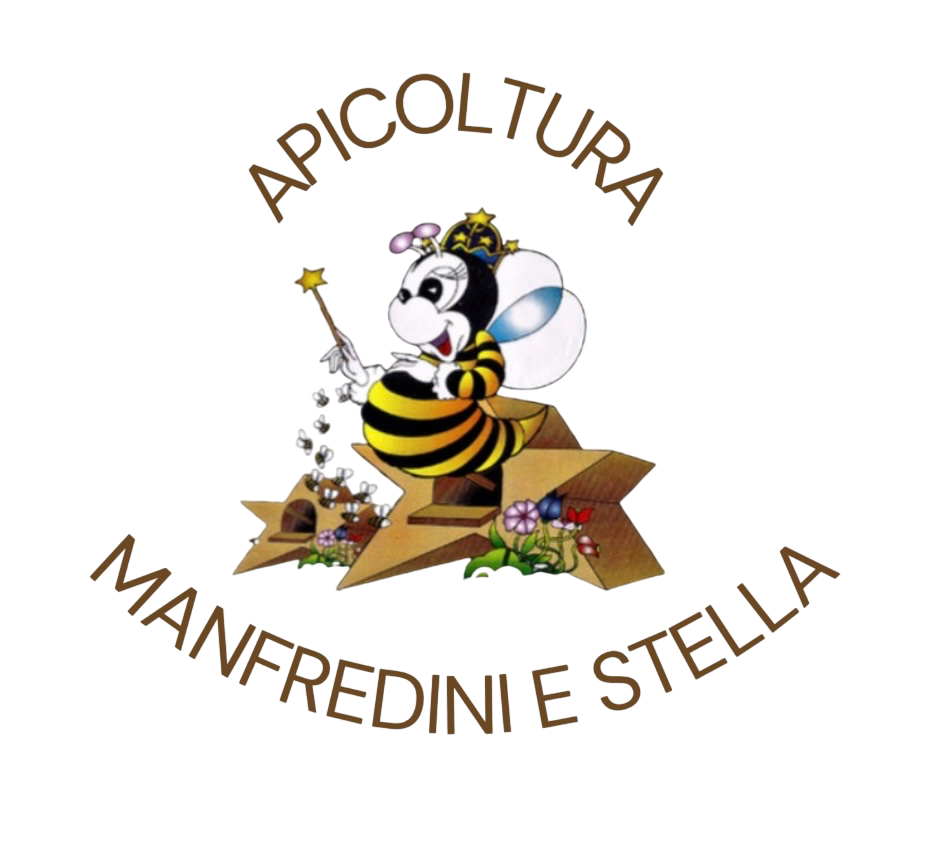

Un Luogo dove tutto può accadere...
I nostri servizi
Apicoltura
Fattoria
Il Miele – Curiosità
L'ape succhia il nettare dai fiori e lo trasforma scindendo gli zuccheri complessi in zuccheri semplici attraverso processi enzimatici. Il miele è quindi ricco di glucosio e fruttosio, zuccheri direttamente assimilabili, ed è naturalmente carico di enzimi. È importante non superare i 30°C nella lavorazione del miele per non danneggiare questi preziosi enzimi.
La cristallizzazione è un fenomeno naturale: ogni tipo di miele ha una diversa propensione a cristallizzare.
Il miele è sconsigliato per i bambini sotto l’anno di età, poiché potrebbe contenere spore di Clostridium botulinum in grado di svilupparsi nell’intestino ancora immaturo del lattante, provocando tossine pericolose.
L’indice glicemico del miele varia in base al tipo:
- Miele di acacia: IG 32
- Zucchero: IG 61
- Pasta: IG 47–65
- Altri mieli possono arrivare fino a IG 95
Assumendo miele in favo, mangiando anche la cera, si ha un apporto considerevole di vitamina A:
- 100 g di carote = 2–9 mg di carotenoidi
- 100 g di cera = 8–12 mg di carotenoidi
Valore energetico:
- 100 g di miele = 320 kcal
- 100 g di zucchero = 400 kcal
Eventi

Contattaci
Email: info@manfrediniestella.it
Telefono: +39 328 721 9902